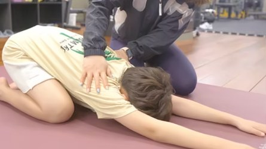
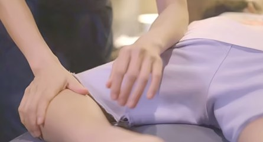
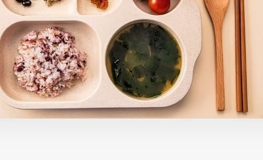

성장 호르몬 밸런스

부모님의 입장에서 생각한
우리아이의 성장에 관한 모든 것!
연세새봄의원은 성장 호르몬만을 주는 것이 아니라
성장 호르몬, 성 호르몬, 수면 호르몬, 갑상선 호르몬, 스트레스 호르몬 등
성장에 도움을 주는 호르몬 밸런스에 초점을 맞춥니다

연세새봄 187 성장클리닉만의
차별화된 통합 솔루션
연세새봄의원은 호르몬 밸런스, 키 성장 운동, 수면, 영양 밸런스,
곧은 발육 케어, 2차 성징을 통합적으로 관리함으로써
우리 아이의 건강한 성장을 도와줍니다

키 성장 치료가 필요한 경우

3명안에 속한다

4cm 미만 성장했다

또래들보다 갑자기 큰다

10cm 이상 키가 작다

성장을 방해하는 것 같다

이상이 있다
키 성장 치료 시기는 언제?

아이 성장에도 때가 있다는 사실
알고 계셨나요?
아이의 성장 패턴, 목표 키, 2차 성징 진행에 따라
치료 시기와 기간이 다릅니다
하지만 너무 늦은 경우에는 성장치료를 받아도 많이 크지 않습니다
따라서 시기를 늦지 않게 검사를 시행 받는 것이 좋습니다
검사를 시행하는 것은 치료 시행과는 별개이므로 큰 부담을 갖지 않아도 됩니다
연세새봄 성장클리닉 특징
연세새봄은 우리 아이의 호르몬, 수면, 영양 상태의
균형을 바로잡아 건강한 성장을 관리합니다

호르몬 관리

사춘기 관리

비만 아이 관리
다이어트와 성장을 동시에 해결

키 자극 운동성장 교정 운동
근막이완, 교정운동을 통한 골격의 비틀림 회복

곧은 발육 케어성장 마사지
교정하여 곧은 발육이 되도록 스트레칭 마사지
수면 관리수면제 없는 수면 클리닉
키가 크는데 도움을 줌

영양 관리
진료 과정
아이의 성장 관리는 아이, 부모님, 의사가 함께 하는 과정입니다
따라서 187 성장 클리닉의 모든 진료 과정을 부모님과 함께 진행하고 있습니다
초진 순간부터 성장 치료가 종료된 후 6개월~1년까지 지속적인
케어를 통해 아이의 건강한 성장을 관리합니다

연세새봄에서는
‘건강하고 균형있는 성장’을
약속 드립니다
연세새봄은 오랜 시간 성장치료를 해온 경험을
바탕으로 미래의 운동선수를 준비하고 있거나 방송,
연기, 모델을 준비하는 우리 아이를 위한 특별한
성장 클리닉 입니다. 바른 영양과 수면, 그리고
균형 잡힌 호르몬 치료를 통해 건강하고 밝은 아이의
미래를 함께 준비합니다.